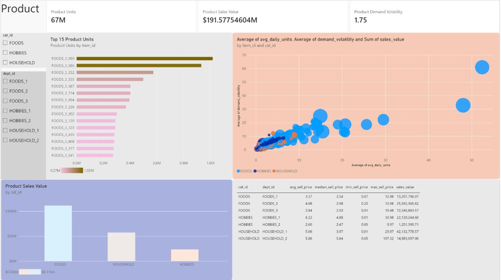

Product Units
66.9M
Same network total as store facts
Analysis of the Power BI Product page against
data/gold_export/
(agg_product_performance, agg_price_analysis,
dim_product).
Full catalogue: 08 Executive · Part A. Product page measures:
Product Units =
SUM ( 'agg_product_performance'[units_sold] )
Product Sales Value =
SUM ( 'agg_product_performance'[sales_value] )
Product Demand Volatility =
AVERAGE ( 'agg_product_performance'[demand_volatility] )
Product Avg Daily Units =
AVERAGE ( 'agg_product_performance'[avg_daily_units] )
Product Units Rank =
RANKX (
ALLSELECTED ( 'agg_product_performance'[item_id] ),
[Product Units],
,
DESC,
DENSE
)
| Measure / field | Visual | Format / note |
|---|---|---|
[Product Units] | Card, Top 15 bar | Whole number |
[Product Sales Value] | Card, category column | Currency $ (2 dp) |
[Product Demand Volatility] | Card | Decimal · dashboard ≈ 1.75 |
item_id + units_rank ≤ 15 | Top 15 bar filter | Or Top N by Product Units |
avg_daily_units, demand_volatility, sales_value, item_id, cat_id | Scatter | Average for X/Y; Sum size; Values = item_id |
agg_price_analysis columns | Price table | No measure required |

| Dashboard visual | Gold source | Validation |
|---|---|---|
| KPI cards | agg_product_performance |
66,927,173 units · $191,577,546.04 · vol ≈ 1.746 |
| Top 15 bar | item_id + units_rank / units |
All 15 are FOODS_3; #1 FOODS_3_090 |
| Scatter | avg_daily_units × demand_volatility · size sales · legend cat | Item grain (not 3 category bubbles) |
| Sales by category | [Product Sales Value] by cat_id |
FOODS $111.1M · HOUSEHOLD $57.1M · HOBBIES $23.3M |
| Price table | agg_price_analysis |
FOODS_3 highest sales; HOUSEHOLD_2 max price 107.32 |
┌──────────────────────────────────────────────────────────────┐ │ [ Product Units ] [ Product Sales $ ] [ Demand Volatility ] │ │ [ cat_id slicer ] │ │ [ dept_id slicer ] [ Top 15 bar ] [ Volatility scatter ]│ │ [ Sales by cat ] [ Price analysis tbl ]│ └──────────────────────────────────────────────────────────────┘
| Visual | Type | Fields |
|---|---|---|
| Category | Slicer | dim_product[cat_id] or agg_product_performance[cat_id] |
| Department | Slicer | dept_id (FOODS_1…HOUSEHOLD_2) |
| KPIs | Cards | [Product Units], [Product Sales Value], [Product Demand Volatility] |
| Top 15 | Clustered bar | Y item_id · X [Product Units] · filter units_rank ≤ 15 |
| Volatility vs volume | Scatter | Values item_id · X avg_daily_units (Avg) · Y demand_volatility (Avg) · Size sales_value · Legend cat_id |
| Sales by category | Clustered column | X cat_id · Y [Product Sales Value] |
| Price analysis | Table | cat_id, dept_id, avg/median/min/max sell price, sales_value |
| Control | Behaviour | Analyst use |
|---|---|---|
| cat_id slicer | Filters all product visuals and KPIs | Isolate FOODS vs HOBBIES vs HOUSEHOLD |
| dept_id slicer | Narrows to one department (e.g. FOODS_3) | Explain why Top 15 is dominated by FOODS_3 |
| Multi-select | Format → Selection → Multi-select with CTRL = Off | Toggle several depts without clearing |
| Scatter click | Highlights one SKU; cross-filters peers if Edit interactions = Filter | Inspect high-volume / high-volatility outliers |
| Top 15 click | Filters scatter/table to that item when interactions allow | Link rank list to bubble position |
cat_id = HOUSEHOLD → see lower volume, different price profile in table.
All Top 15 SKUs by units are in department FOODS_3.
Leader FOODS_3_090: 1,017,916 units (~1.5% of all units),
avg daily units 52.4, demand volatility 60.9 (also #1 volatility).
| Rank | item_id | Units | Sales | Avg daily | Volatility |
|---|---|---|---|---|---|
| 1 | FOODS_3_090 | 1,017,916 | $1.38M | 52.4 | 60.9 |
| 2 | FOODS_3_586 | 932,236 | $1.48M | 48.0 | 32.8 |
| 3 | FOODS_3_252 | 573,723 | $0.87M | 29.6 | 22.2 |
| 4 | FOODS_3_555 | 497,881 | $0.79M | 25.7 | 18.6 |
| 5 | FOODS_3_587 | 402,159 | $0.99M | 20.7 | 18.6 |
High-velocity FOODS items also tend to be high-volatility — volume and instability travel together for the head of the assortment (corr(avg_daily_units, demand_volatility) ≈ 0.94 across SKUs).
| Category | SKUs | Units | Sales | Mean volatility |
|---|---|---|---|---|
| FOODS | 1,437 | 45.9M | $111.1M | 2.39 |
| HOUSEHOLD | 1,047 | 14.8M | $57.1M | 1.19 |
| HOBBIES | 565 | 6.2M | $23.3M | 1.13 |
FOODS is both the largest and the most volatile category on average. HOBBIES is smallest and calmest — fewer SKUs, lower unit velocity.
| dept_id | Avg price | Median | Min | Max | Sales value |
|---|---|---|---|---|---|
| FOODS_3 | $2.84 | $2.50 | $0.01 | $19.48 | $72.35M |
| HOUSEHOLD_1 | $5.06 | $3.97 | $0.01 | $29.97 | $42.13M |
| FOODS_2 | $4.08 | $2.98 | $0.20 | $13.98 | $25.59M |
| HOBBIES_1 | $6.22 | $4.88 | $0.01 | $30.98 | $22.12M |
| HOUSEHOLD_2 | $5.86 | $5.64 | $0.05 | $107.32 | $14.98M |
| FOODS_1 | $3.37 | $2.54 | $0.07 | $12.98 | $13.20M |
| HOBBIES_2 | $2.69 | $2.47 | $0.05 | $9.97 | $1.20M |
FOODS_3 drives the most sales at a low average price — classic high-velocity grocery. HOUSEHOLD_2 has the extreme max price ($107.32) but far less total sales than FOODS_3.
Most SKUs cluster near the origin (low avg daily units, low volatility). A small FOODS tail extends to the upper-right: high run-rate and high volatility. Those SKUs need tighter forecast / safety-stock attention than the long tail of quiet items.
item_id on Values with Average of
avg_daily_units / demand_volatility — correct grain
(not 3 summed category bubbles).
units_rank / unit ranking in Gold.
dept_id, avg_sell_price, stores_selling).
FOODS_3_090, _586).python - <<'PY'
import pandas as pd
from pathlib import Path
P = Path('data/gold_export')
pp = pd.read_parquet(P/'agg_product_performance.parquet')
print(pp['units_sold'].sum(), pp['sales_value'].sum(), pp['demand_volatility'].mean())
print(pp.nsmallest(15, 'units_rank')[['item_id','units_sold','demand_volatility']])
print(pd.read_parquet(P/'agg_price_analysis.parquet').sort_values('sales_value', ascending=False))
PY
Screenshot:
assets/product-dashboard-page3.png.
Related:
08 Executive ·
09 Store.
{kind=link}